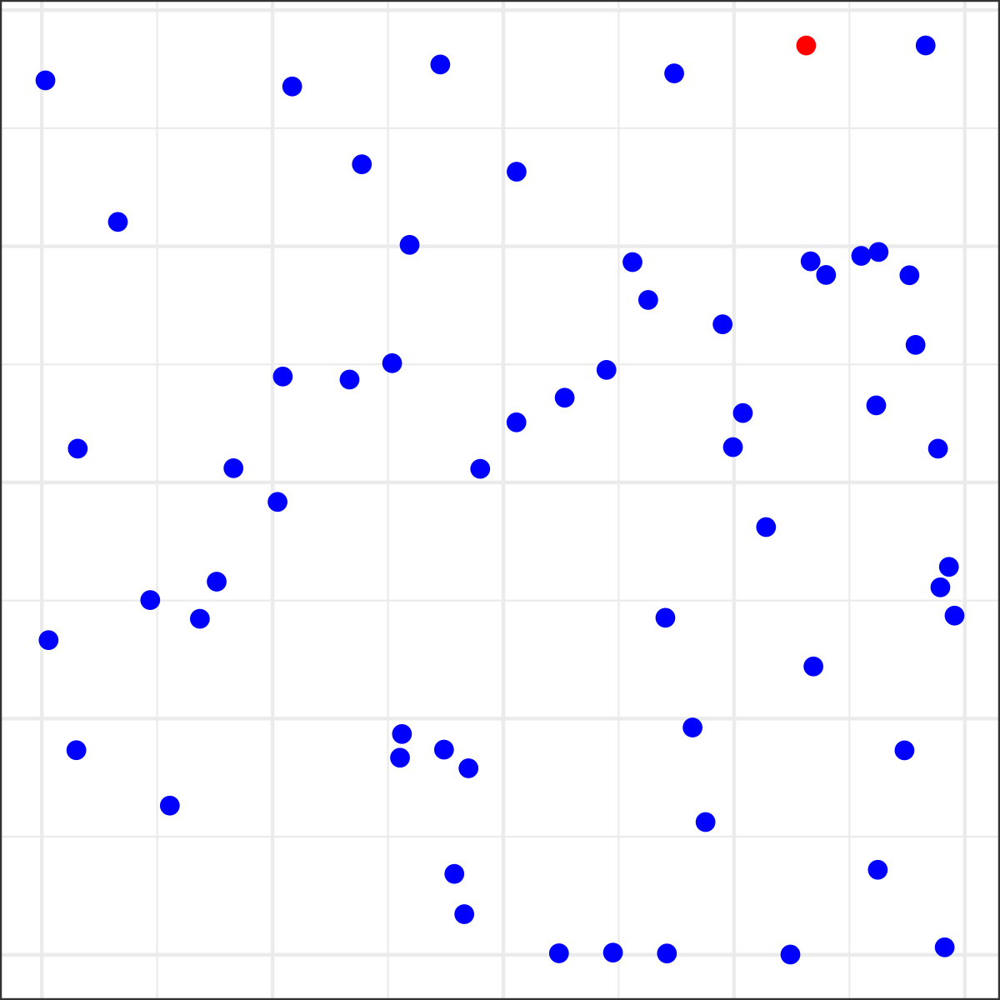
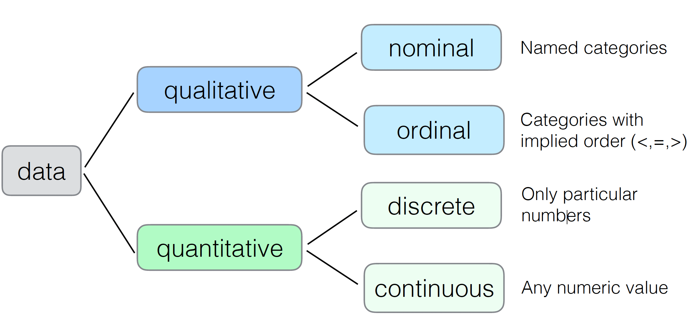
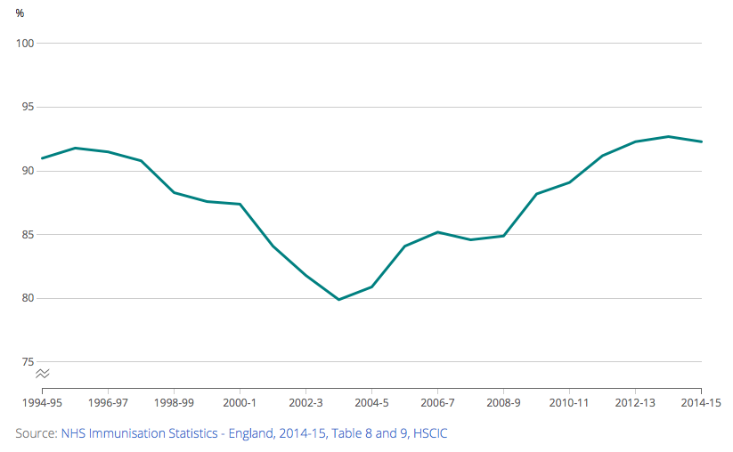
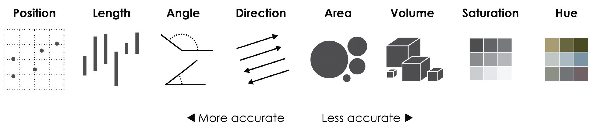
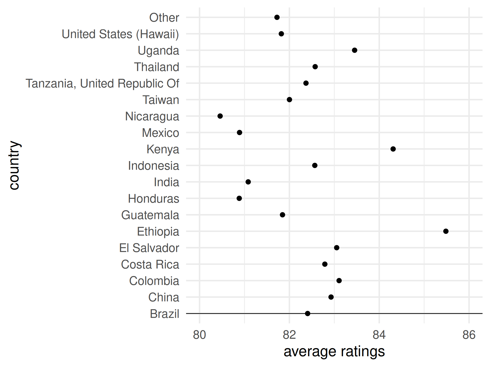
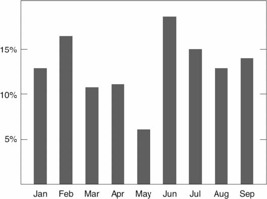
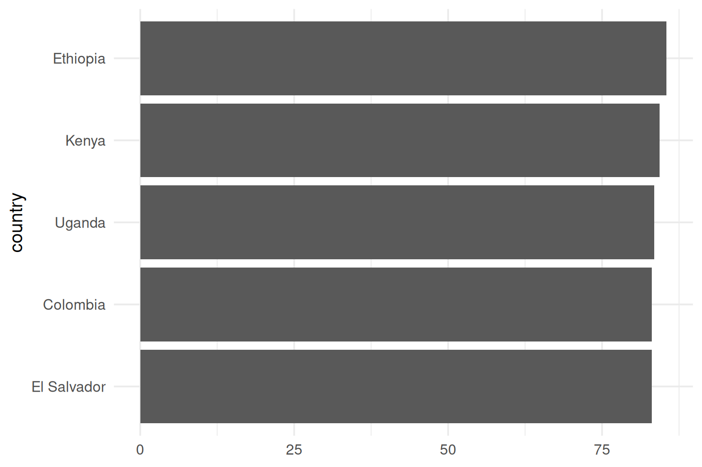

05:00
Lecture 2. Visual Vocabulary & Effective Visualizations
PUBH 6199: Visualizing Data with R, Summer 2025
Xindi (Cindy) Hu, ScD
2025-05-27
Outline for today
- How human see data
- Data-Ink Maximization and Graphical Redesign
- Design considerations for different types of intended audience
Good data visualization is optimized for our visual-memory system
Helps us understand trends and patterns
Makes data more accessible to different audiences
Useful in decision-making and communication

The power of pre-attentive processing
Count all the 5s in the following image

The power of pre-attentive processing
Count all the 5s in the following image

What is pre-attentive processing?
- Rapid, automatic processing of visual information before conscious attention kicks in.
- Happens within <250 milliseconds.
- Helps identify key patterns without effort.

Not all pre-attentive features are created equal
Raise your hand when you see the red dot?

Classify data types
Introducing visual variable
“A visual variable, in data visualization, is an aspect of a graphical object that can visually differentiate it from other objects, and can be controlled during the design process.”
- Jacques Bertin, 1967, Sémiologie Graphique

In-Class Activity:
Create at least three sketches to visualize these two quantities
42, 23
Which Bertin’s visual variables did you use in your sketches?
45 ways to visualizae two quantities
https://rockcontent.com/blog/45-ways-to-communicate-two-quantities/
Cleveland’s three visual operations of pattern perception
üéØ Detection: Recognizing that a geometric object encodes a physical value.
üß© Assembly: Grouping detected graphical elements into patterns.
üìè Estimation: Visually assessing the relative magnitude of two or more values.
Starting with estimation because it is the hardest
Three levels of estimation
| Level | Example |
|---|---|
| 1. Discrimination | X = Y X != Y |
| 2. Ranking | X < Y X > Y |
| 3. Ratioing | X / Y = ? |
üìè We want to get as far down this list as possible with efficiency and accuracy
What visual cues are most effective for which type of data?
Source: Yau, N. (2013). Data Points: Visualization That Means Something. Wiley.
Introducing the coffee ratings dataset
- These data contain reviews of 1312 arabica and 28 robusta coffee beans from the Coffee Quality Institute’s trained reviewers. (Link to dataset)
- It contains detailed information on coffee samples from different countries, focusing on nine attributes like aroma, flavor, aftertaste, acidity, body, balance, uniformity, cup cleanliness, sweetness.
- Total cup points measures the overall coffee quality.
library(tidyverse)
library(kableExtra)
coffee_ratings <- readr::read_csv("data/coffee_ratings.csv")
glimpse(coffee_ratings)Rows: 1,337
Columns: 43
$ total_cup_points <dbl> 90.58, 89.92, 89.75, 89.00, 88.83, 88.83, 88.75,…
$ species <chr> "Arabica", "Arabica", "Arabica", "Arabica", "Ara…
$ owner <chr> "metad plc", "metad plc", "grounds for health ad…
$ country_of_origin <chr> "Ethiopia", "Ethiopia", "Guatemala", "Ethiopia",…
$ farm_name <chr> "metad plc", "metad plc", "san marcos barrancas …
$ lot_number <chr> NA, NA, NA, NA, NA, NA, NA, NA, NA, NA, NA, NA, …
$ mill <chr> "metad plc", "metad plc", NA, "wolensu", "metad …
$ ico_number <chr> "2014/2015", "2014/2015", NA, NA, "2014/2015", N…
$ company <chr> "metad agricultural developmet plc", "metad agri…
$ altitude <chr> "1950-2200", "1950-2200", "1600 - 1800 m", "1800…
$ region <chr> "guji-hambela", "guji-hambela", NA, "oromia", "g…
$ producer <chr> "METAD PLC", "METAD PLC", NA, "Yidnekachew Dabes…
$ number_of_bags <dbl> 300, 300, 5, 320, 300, 100, 100, 300, 300, 50, 3…
$ bag_weight <chr> "60 kg", "60 kg", "1", "60 kg", "60 kg", "30 kg"…
$ in_country_partner <chr> "METAD Agricultural Development plc", "METAD Agr…
$ harvest_year <chr> "2014", "2014", NA, "2014", "2014", "2013", "201…
$ grading_date <chr> "April 4th, 2015", "April 4th, 2015", "May 31st,…
$ owner_1 <chr> "metad plc", "metad plc", "Grounds for Health Ad…
$ variety <chr> NA, "Other", "Bourbon", NA, "Other", NA, "Other"…
$ processing_method <chr> "Washed / Wet", "Washed / Wet", NA, "Natural / D…
$ aroma <dbl> 8.67, 8.75, 8.42, 8.17, 8.25, 8.58, 8.42, 8.25, …
$ flavor <dbl> 8.83, 8.67, 8.50, 8.58, 8.50, 8.42, 8.50, 8.33, …
$ aftertaste <dbl> 8.67, 8.50, 8.42, 8.42, 8.25, 8.42, 8.33, 8.50, …
$ acidity <dbl> 8.75, 8.58, 8.42, 8.42, 8.50, 8.50, 8.50, 8.42, …
$ body <dbl> 8.50, 8.42, 8.33, 8.50, 8.42, 8.25, 8.25, 8.33, …
$ balance <dbl> 8.42, 8.42, 8.42, 8.25, 8.33, 8.33, 8.25, 8.50, …
$ uniformity <dbl> 10.00, 10.00, 10.00, 10.00, 10.00, 10.00, 10.00,…
$ clean_cup <dbl> 10, 10, 10, 10, 10, 10, 10, 10, 10, 10, 10, 10, …
$ sweetness <dbl> 10.00, 10.00, 10.00, 10.00, 10.00, 10.00, 10.00,…
$ cupper_points <dbl> 8.75, 8.58, 9.25, 8.67, 8.58, 8.33, 8.50, 9.00, …
$ moisture <dbl> 0.12, 0.12, 0.00, 0.11, 0.12, 0.11, 0.11, 0.03, …
$ category_one_defects <dbl> 0, 0, 0, 0, 0, 0, 0, 0, 0, 0, 0, 0, 0, 0, 0, 0, …
$ quakers <dbl> 0, 0, 0, 0, 0, 0, 0, 0, 0, 0, 0, 0, 0, 0, 0, 0, …
$ color <chr> "Green", "Green", NA, "Green", "Green", "Bluish-…
$ category_two_defects <dbl> 0, 1, 0, 2, 2, 1, 0, 0, 0, 4, 1, 0, 0, 2, 2, 0, …
$ expiration <chr> "April 3rd, 2016", "April 3rd, 2016", "May 31st,…
$ certification_body <chr> "METAD Agricultural Development plc", "METAD Agr…
$ certification_address <chr> "309fcf77415a3661ae83e027f7e5f05dad786e44", "309…
$ certification_contact <chr> "19fef5a731de2db57d16da10287413f5f99bc2dd", "19f…
$ unit_of_measurement <chr> "m", "m", "m", "m", "m", "m", "m", "m", "m", "m"…
$ altitude_low_meters <dbl> 1950.0, 1950.0, 1600.0, 1800.0, 1950.0, NA, NA, …
$ altitude_high_meters <dbl> 2200.0, 2200.0, 1800.0, 2200.0, 2200.0, NA, NA, …
$ altitude_mean_meters <dbl> 2075.0, 2075.0, 1700.0, 2000.0, 2075.0, NA, NA, …Calculate country-level summaries
For each country in the 18 most frequent levels, calculate the average total cup points and the number of coffee bean varieties, lump the other countries into the Other category.
country_summary <- coffee_ratings %>%
mutate(country = fct_lump(country_of_origin, 18)) %>%
group_by(country) %>%
summarize(mean_rating = mean(total_cup_points, na.rm = TRUE),
n = n()) %>%
arrange(desc(mean_rating))
head(country_summary, 19)# A tibble: 19 × 3
country mean_rating n
<fct> <dbl> <int>
1 Ethiopia 85.5 44
2 Kenya 84.3 25
3 Uganda 83.5 36
4 Colombia 83.1 183
5 El Salvador 83.1 21
6 China 82.9 16
7 Costa Rica 82.8 51
8 Thailand 82.6 32
9 Indonesia 82.6 20
10 Brazil 82.4 132
11 Tanzania, United Republic Of 82.4 40
12 Taiwan 82.0 75
13 Guatemala 81.8 181
14 United States (Hawaii) 81.8 73
15 Other 81.7 80
16 India 81.1 14
17 Mexico 80.9 236
18 Honduras 80.9 52
19 Nicaragua 80.5 26Let’s start from the bottom of the list
- Position on a common scale
- Position on non-aligned scales
- Length
- Angle
- Area
- Volume <> Density <> Color saturation
- Color hue
Use color hue to visualize average ratings
Easy: which has higher ratings, Kenya or Indonesia?
Use color hue to visualize average ratings
Hard: which has higher ratings, Indonesia or Costa Rica?

What about now?
Observation: alphabetical ordering of the categorical variable is almost never useful, re-rank as needed.
Move up one level to color saturation
- Position on a common scale
- Position on non-aligned scales
- Length
- Angle
- Area
- Volume <> Density <> Color saturation
- Color hue
Use color saturation to visualize average ratings
No legend?
No problem.
Because color saturation has natural ordering.
Color saturation is easier to quantify
The ratio between Mexico and United States is…
2 or 3
Moving down to the third level of estimation
Move up one level to area
- Position on a common scale
- Position on non-aligned scales
- Length
- Angle
- Area
- Volume <> Density <> Color saturation
- Color hue
This is weird graph but still informative
Move up one level to angle
- Position on a common scale
- Position on non-aligned scales
- Length
- Angle
- Area
- Volume <> Density <> Color saturation
- Color hue
Use angle to visualize coffee bean varieties
Pie charts use angles to encode data
For categorical data, no more than 6 colors is best.
(Source: European Environment Agency)
We are so close!
- Position on a common scale
- Position on non-aligned scales
- Length
- Angle
- Area
- Volume <> Density <> Color saturation
- Color hue
Wait, I thought there is some difference…
The start-at-zero rule
How to Lie with Statistics (1954)
- Darrell Huff argues that truncating the y-axis can exaggerate differences and mislead the viewer.
- It creates a false impression of dramatic change where the actual variation is small.
The Visual Display of Quantitative Information (1983)
- Edward Tufte prioritizes data density and the detection of subtle patterns.
- He argues that starting at zero can waste valuable space, obscuring meaningful variations.
Combined MMR vaccination rate, 1994/95 to 2014/15, England
Take another look, axis doesn’t start at zero

Position, but not a common scale
- Position on a common scale
- Position on non-aligned scales
- Length
- Angle
- Area
- Volume <> Density <> Color saturation
- Color hue
Position, and a common scale
- Position on a common scale
- Position on non-aligned scales
- Length
- Angle
- Area
- Volume <> Density <> Color saturation
- Color hue
Position, and a common scale
- Position on a common scale
- Position on non-aligned scales
- Length
- Angle
- Area
- Volume <> Density <> Color saturation
- Color hue
Re-ranking categorical variables still matters!
Implications for designing effective data visualizations
- Stacked anything is nearly always a mistake
- Pie charts are always a mistake
- Scatterplot are the best way to show the relationships between two variables
- If growth (slope) is important, plot it directly
Stacked anything is nearly always a mistake!
Which category has higher count: SI1-Premium or VS2-Premium?
Transform stacked barplot to a parallel coordinate plot
Which category has higher count: SI1-Premium or VS2-Premium?
You lose some information, but just use two charts if needed
Why are pie charts never a good idea?
Angle is #4 on the accuracy list, we can do better.
If you have a small amount of data to show, don’t use pie charts
Don’t do this!
Do this instead!
| Label | Value |
|---|---|
| A | 25 |
| B | 60 |
| C | 15 |
If you have a lot of data to show, don’t use pie charts
Don’t do this!
Or this!
All good pie charts are jokes
If you want to show the relationship between two variables, use scatterplot
What is the relationship between Ozone concentrations and temperature?
If you want to show the relationship between two variables, use scatterplot
If you care about the growth (slope), plot it directly
Which country has higher population growth: Nigeria or India?
If you care about the growth (slope), plot it directly
Most countries’ population growth are slowing down, which wasn’t obvious in the previous graph.
Cleveland’s three visual operations of pattern perception
üéØ Detection: Recognizing that a geometric object encodes a physical value.
üß© Assembly: Grouping detected graphical elements into patterns.
üìè Estimation: Visually assessing the relative magnitude of two or more values.
Assembly: Gestalt Psychology
“Gestalt (German for form, shape, or configuration). Gestalt psychology proposes that the human brain perceives objects as part of a greater whole rather than as isolated elements.”
Reification
Emergence
Applying Gestalt principles to data visualization
“The law of Prãgnanz, also known as the law of good Gestalt. People tend to experience things as regular, orderly, symmetrical, and simple.”
Law of Continuity
Law of Similarity
Law of Closure
Law of Proximity
Bad visualizations lack law of continuity
This hurts our brain.
Good visualizations leverage law of continuity
This is much easier.
Use law of similarity to group similar data
Some encodings are better than others
Shape is less effective than color hue for nominal data
You can combine both color and shape to be more effective
Use law of closure to group similar data
Law of proximity: we see elements near each other as part of the same object
Still worse than parallel coordinate plot

Cleveland’s three visual operations of pattern perception
üéØ Detection: Recognizing that a geometric object encodes a physical value.
üß© Assembly: Grouping detected graphical elements into patterns.
üìè Estimation: Visually assessing the relative magnitude of two or more values.
Detection should be trivial, don’t make it hard
Detection should be trivial, don’t make it hard
Detection should be trivial, don’t make it hard
Take a Break
~ This is the end of part 1 ~
05:00
Outline for today
- How human see data
- Data-Ink Maximization and Graphical Redesign
- Design considerations for different types of intended audience
Principles of Graphical Excellence
Graphical excellence is the well-designed presentation of interesting data - a matter of substance, of statistics, and of design.
Graphical excellence consists of complex ideas communicated with clarity, precision, and efficiency.
Graphical excellence is that which gives the viewer the greatest number of ideas in the shortest time with the least ink in the smallest space.
Graphical excellence is nearly always multivariate.
Graphical excellence requires telling the truth about the data.
Lie factor
\[ \text{Lie Factor} = \frac{\text{size of effect shown in graphic}}{\text{size of effect in data}} \]
Can you calculate the lie factor in this graph?
Why are 3D graphs bad?
Source: the Guardian, 2008
How should the data be plotted?
Or even better
Maximize Data-Ink Ratio
\[ \begin{aligned} \text{Data-Ink Ratio} &= \frac{\text{Data ink}}{\text{Total ink used in graphic}} \\ &= \text{proportion of a graphic's ink devoted to the} \\ &\quad \text{non-redundant display of data-information} \\ &= 1 - \frac{\text{Redundant ink}}{\text{Total ink used in graphic}} \end{aligned} \]
Avoid junk chart
Avoid junk chart
Avoid junk chart
Avoid junk chart
Avoid junk chart
Avoid junk chart
Data density in graphical practice
Office of Management and Budget
Social Indicators, 1973
\[ \text{data density of a graphic} = \frac{\text{number of entries in data matrix}}{\text{area of data graphic}} \]
\[ \begin{aligned} \text{data density} &= \frac{\text{2 data points}}{\text{graph covres 26.5 square inch}} \\ &= 0.15 \text{ numbers per square inch} \end{aligned} \]
Data density in graphical practice
Jacques Bertin, Semiologie Graphique, 1973
\[ \text{data density of a graphic} = \frac{\text{number of entries in data matrix}}{\text{area of data graphic}} \]
\[ \begin{aligned} \text{data density} &= \frac{\text{240,000 data points}}{\text{graph covres 27 square inch}} \\ &= 9,000 \text{ numbers per square inch} \end{aligned} \]
How to create high-information graphics design?
Graphics can be shrunk way down
Default size

Appropriate size
Small Multiples
“Small multiples resemble the frames of a movie: a series of graphics, showing the same combination of variables, indexed by changes in another variable.”
Tufte, E. R. (1983). The Visual Display of Quantitative Information. Cheshire, CT: Graphics Press.
Well-designed small multiples are
- inevitably comparative
- deftly multivariate
- shrunken, high-density graphics
- usually based on a large data matrix
- draw almost entirely with data-ink
- efficient in interpretation
- often narrative in content, showing shifts in the relationship between variables as the index variable changes (thereby revealing interaction or multiplicative effects)
Outline for today
- How human see data
- Data-Ink Maximization and Graphical Redesign
- Design considerations for different types of intended audience
Audience dimensions
Audience may vary by:
- Domain knowledge: the field of study
- Statistical literacy: the level of knowledge
- Time constraints: the time available to read the data
- Cognitive load: the ability to process large amount of information
- Expectations for interactivity or aesthetics
Tufte’s design principles
- Graphical integrity
- The Lie Factor
- Maximize data-ink ratio
- Avoid chart junk

Most useful for analytical or technical audience, e.g. scientists, engineers, and data analysts. Less useful for the general public or media campaigns.
Useful junk
In-Class Activity:
Choose one of the three visualizations and answer:
What message is this chart trying to convey?
How do the visuals help (or hurt) comprehension?
If you removed the embellishments, what would be lost or gained?
05:00
Data accessibility for individuals with intellectural or developmental disabilities
Data accessibility for individuals with color blindedness
Color blindness affects approximately 1 in 12 men and 1 in 200 women. To ensure your visualizations remain accessible:
- Avoid red-green or red-brown combinations
- Use colorblind-friendly palettes, such as
viridis,Okabe-Ito, orColor Universal Design (CUD) - Add texture, shape, or direct labels to differentiate groups beyond color
- Test your charts with tools like
colorblindr - Use contrast checkers to ensure sufficient visual separation
Designing with color blindness in mind improves clarity for everyone.
End-of-Class Survey
Fill out the end-of-class survey
~ This is the end of Lecture 2 ~
10:00

PUBH 6199: Visualizing Data with R